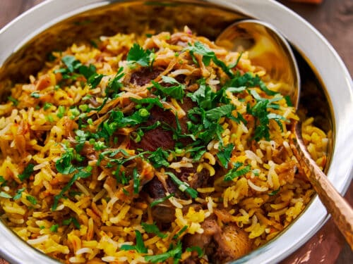
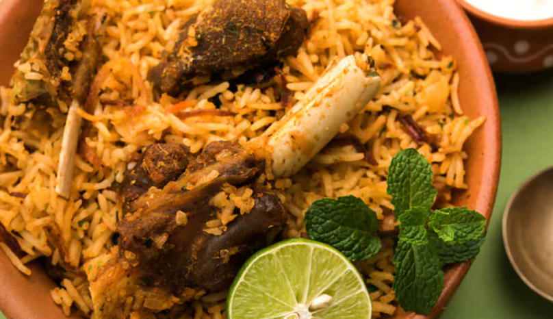

Discover Delicious Meals!
Chicken briyani
Biryani is a delicious and nutritious dish that can provide a range of potential health benefits.
Mttun briyani
This mutton biryani recipe layers fragrant basmati rice and succulent goat meat cooked in a rich Mughlai spice blend for the ultimate meal.
Chicken 65

Chicken 65 is a popular South Indian Chicken appetizer made by deep frying marinated chicken with curry leaves and green chilies.
Chicken gravy

Chicken Gravy is a delicious side dish made by cooking chicken with onion & tomato, cashews along with tempered spices and masala powders.